2025-2026学年八年级数学上学期期末模拟卷
强化卷·参考答案
一、选择题：本题共10小题，每小题3分，共30分。在每小题给出的四个选项中，只有一项是符合题目要求的。
1 | 2 | 3 | 4 | 5 | 6 | 7 | 8 | 9 | 10 |
D | A | B | C | D | A | C | B | A | D |
二、填空题：本题共6小题，每小题3分，共18分。
11．
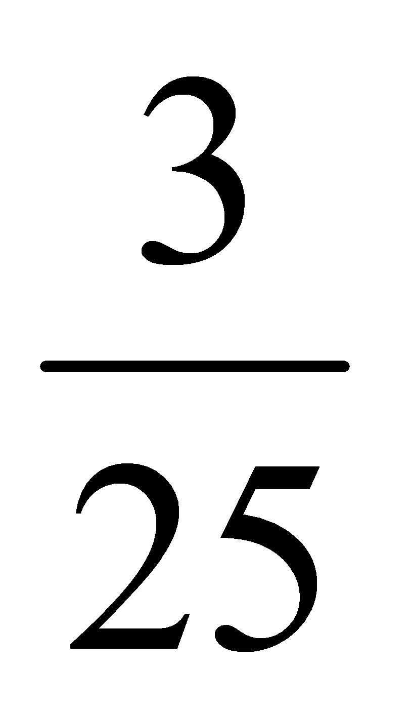
12．
13．2
14．1或
15．0
16．
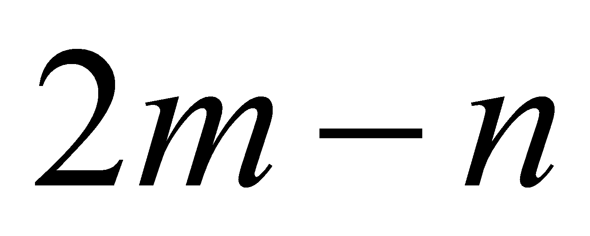
三、解答题（本题共8小题，第17-21题每题8分，第22-23题每题10分，第24题12分，共72分．解答应写出文字说明、证明过程或演算步骤．）
17．(8分)
【详解】（1）原式
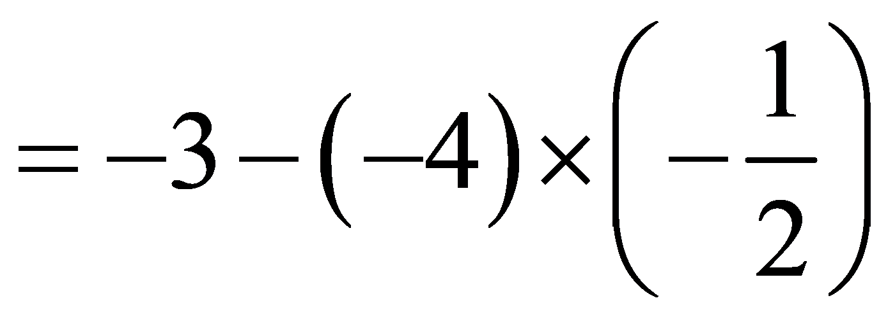
（2分）
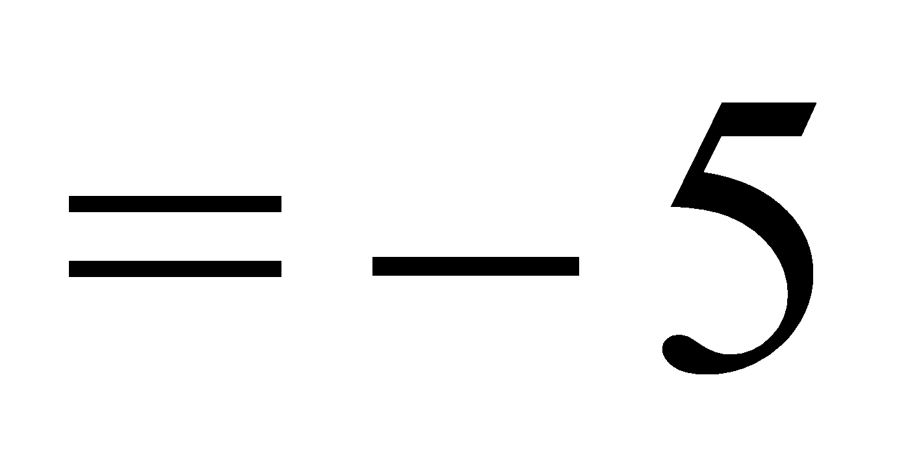
（4分）（2）原式 （6分）
（6分）
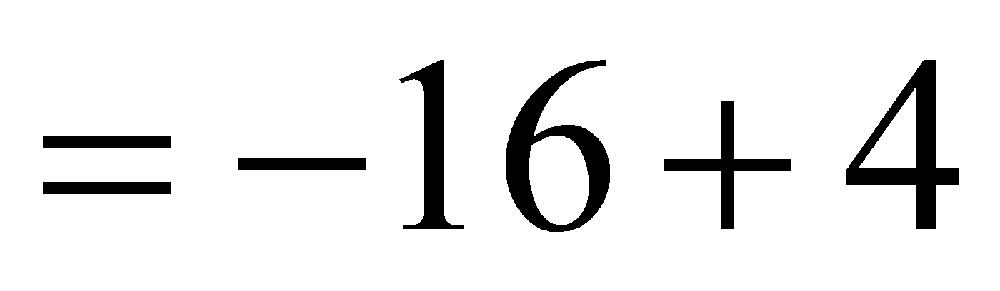
 （8分）
（8分）
18．(8分)
【详解】（1）解：
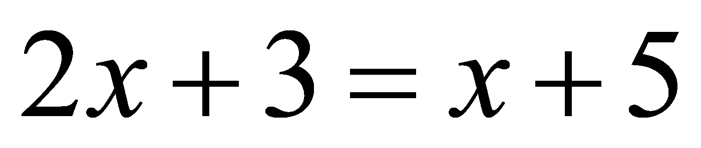
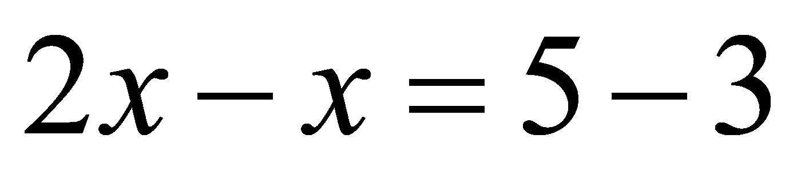
解得 ； （4分）
； （4分）
（2）解：

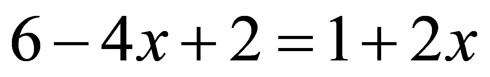


解得 ． （8分）
． （8分）
19．(8分)
【详解】（1）解： （人），
（人），
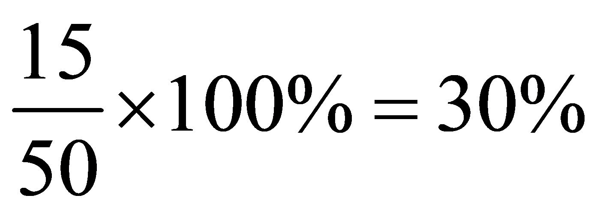
，即

故答案为：50， ，
， （3分）
（3分）
（2） （人），
（人），
补全条形统计图如下：
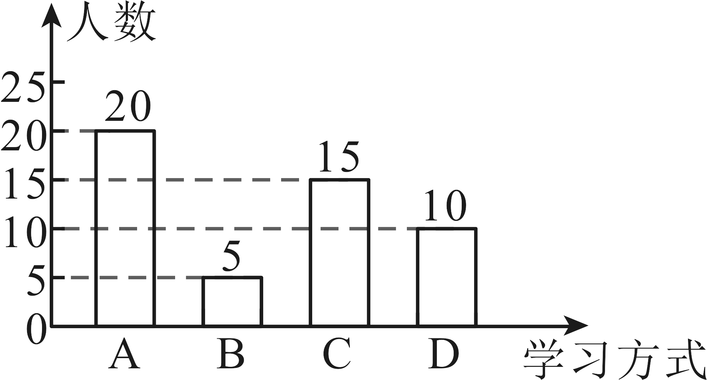
（6分）（3） （人） （8分）
（人） （8分）
答：该校最喜欢方式 的学生约有400人．
的学生约有400人．
20．(8分)
【详解】解：
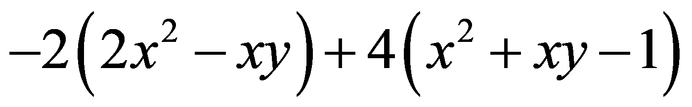
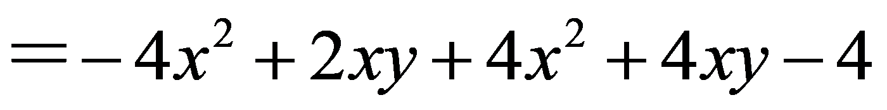
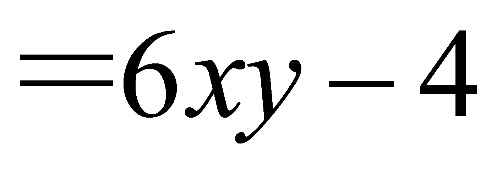
， （5分）当， 时，
时，

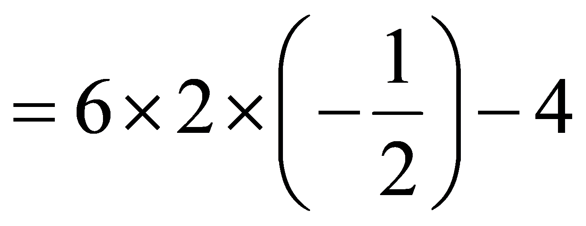
 ． （8分）
． （8分）
21．(8分)
【详解】解：（1）根据图形知：长为：3；宽为：2；高为：1
故长方体体积为： ，
，
故答案为：6； （4分）
（2）①圆柱
②根据图形知：半径为：5，高为：20
故圆柱体的体积为：
故答案为： . （8分）
. （8分）
22．(10分)
【详解】（1）解：∵
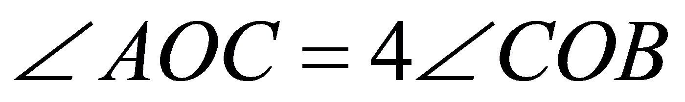
， ，
，∴
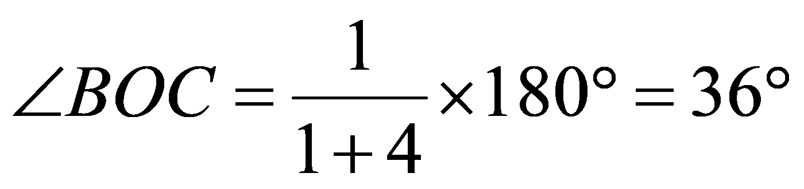
； （3分）（2）解：∵
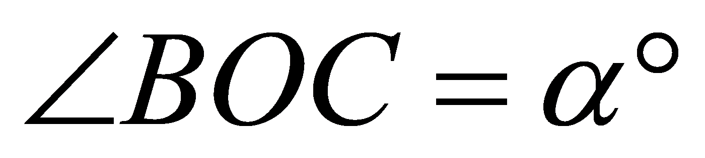
，，∴ ，
，
∵ 平分
平分 ，
，
∴ ，
，
又
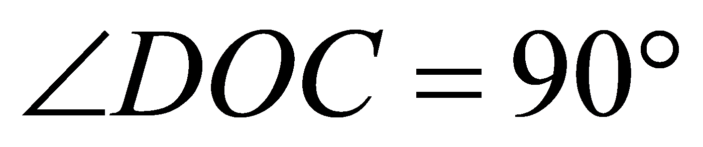
， ； （6分）
； （6分）
（3）解：∵，，
∴ ，
，
∵ 平分
平分 ，
，
∴
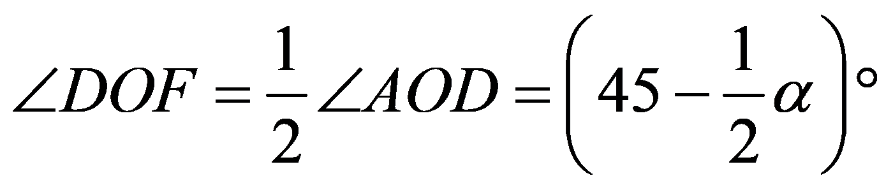
，又 ，
，
∴ ，
，
∵ ，
，
∴ ，
，
∴
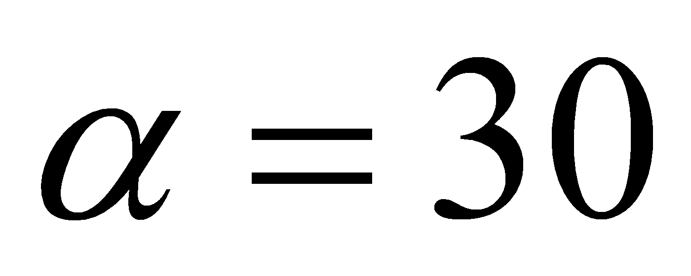
． （10分）23．(10分)
【详解】（1）解： （元）
（元）
∴9月的电费是80元；
 （元）
（元）
∴10月的电费是120元；
故答案为：80，120； （5分）
（2）解：依题意，当
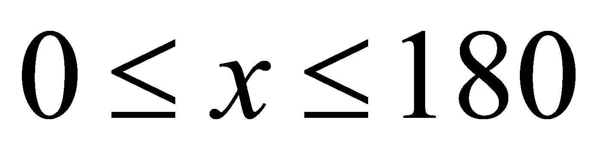
时，电费是 元；
元；当 时，电费是
时，电费是 元；
元；
（3）解：由（1）知12用电量大于230度，
当 ，
，  ；
；
可知12用电量在第三档，
设12月用电量为 度，
度，
则
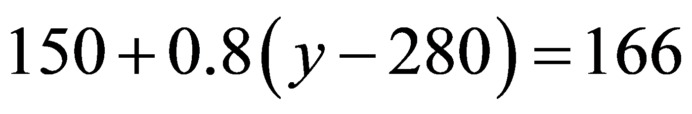
，解得： ，
，
即12月用电量为 度． （10分）
度． （10分）
24．(12分)
【详解】（1）解：∵ 是线段
是线段 的中点，
的中点， ．∴
．∴ ，
，
∵ 是线段
是线段 的中点，
的中点，
∴
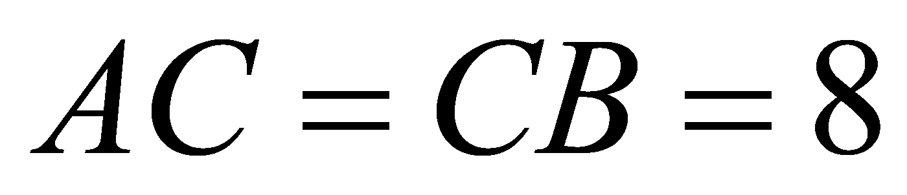
，∴ ，
，
∵点在线段 上且
上且 ，
，
∴ ； （4分）
； （4分）
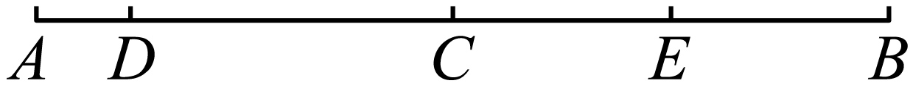
（2）解：①存在，
当P、Q相遇时，
∵ ，
，
∴ ，
，
∵
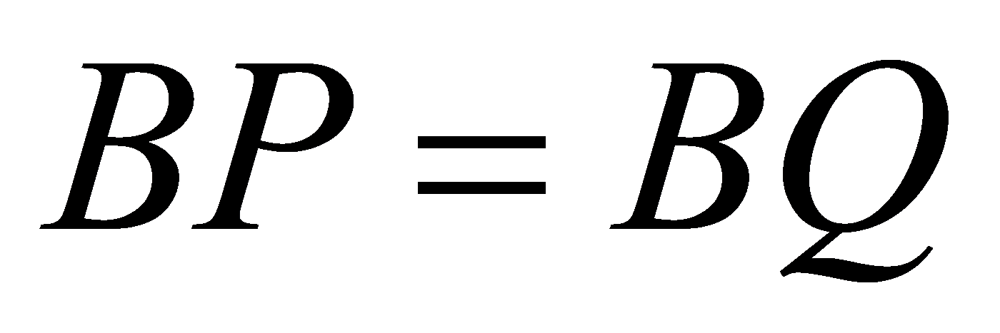
，∴
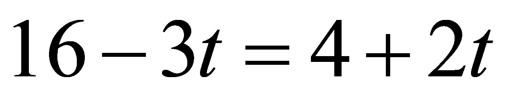
，解得
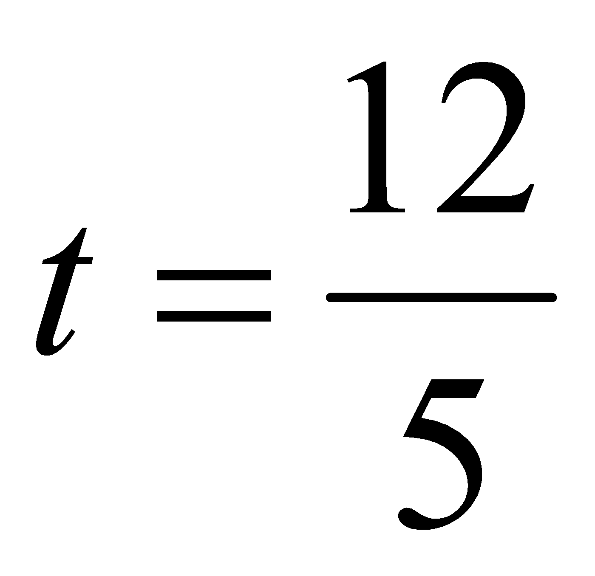
；当P、Q相遇后，
∵
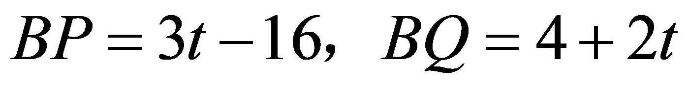
，∴ ，
，
解得
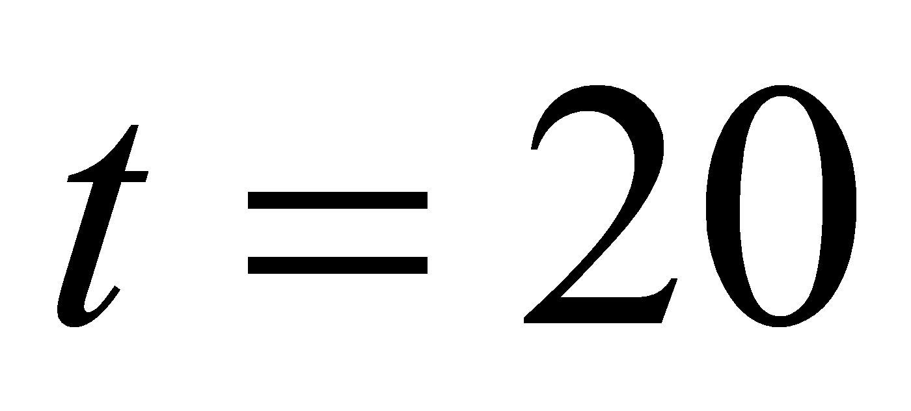
；故或； （8分）
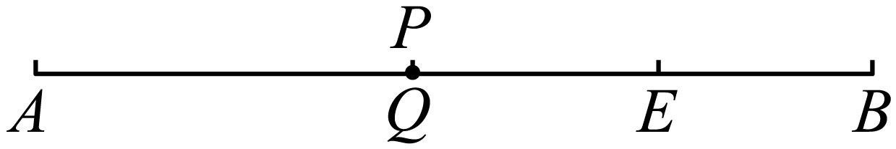
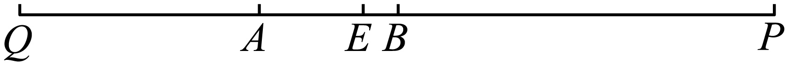
② ，理由：
，理由：
∵ 分别是线段和
分别是线段和 的中点，
的中点， ，
，
∴ ，
，
∵
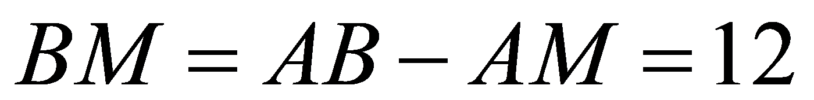
，∴ ，
，
∵
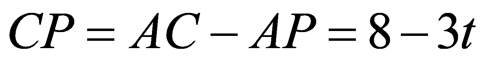
，∴ ，
，
∴ ． （12分）
． （12分）
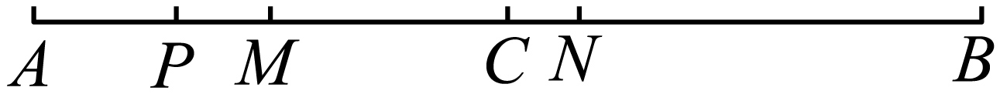